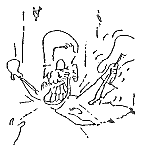

|
Lunch With The Fatman | 1, 2, 3
"Crackpot Beliefs"
Hi. Sit down. What are you having? Welcome to Lunch with the Fat Man.
For your entertainment, dear Reader, I have taken in this column elaborate forays into the nature of truth, and it's left me, I must say, at a bit of a loss. Originally intended as a column of studio-related advice and dogma, this vehicle has transcended the level of the technical advice column, slipped through the world of artistic analysis, and rocketed upwards towards the lofty aspirations of the philosophers -- in other words, this "How-To" column for the recording artist has turned into a "How-to-Think" column. Well, I think it had to happen, as choosing the right microphone for the right instrument simply can't be done without the knowledge of how to make a decision. The real tragedy, however, came two articles back in the final issue of Glitch. Re-reading it, I suddenly realized that my article entitled "For Every Philosophy There Is an Equal and Opposite Philosophy," or "Rule of Thumb Wrestling", not only had strayed far from the original, simple, instructive goals of my writing, but it also had the perverse ability to rob the reader who understands the article of his ability to think at all. I mean there I was, the original premise of my column badly dissipated and blurred, my sense of direction shot to hell, and this horrible vision of the few of my readers who could understand that last article unable to think -- bumping lazily into walls, their fingers listlessly lodged in their nose was how I pictured them. I hope you won't take that as an insult, dear Reader.
 This month, I am of the opinion that thinking something is better than frying your brains to a useless smoldering lump of fat in a hollow bone ball trying to do metaphysical acrobatics in the interest of thinking correctly. Yes, a man's got to have crackpot beliefs.
To pay tribute to that fact, and to once again anchor this column to its techno-musical base, I'd like to list some ideas that I've run across in the studio that are so bad (by this month's set of values) that I think a large number of you readers will be able to rally with me around this column of Lunch With the Fat Man and have a good laugh at all those idiots out there, reinforce our common ideas, and focus our energy on creating our own style in the studio.
Crackpot Beliefs That Don't Agree With My Crackpot Beliefs:
Microphone cables, when laid out neatly, sound better than microphone cables sloppily thrown about. Perhaps the engineer who said this was only noticing that his best sounding sessions were the ones in which time management was so good that he had time to layout his cables neatly.
It's important for a studio to have lots of the latest equipment. Nope. The best studios have good sounding rooms and good maintenance. A sensible compliment of adequate and inspiring gear is helpful. If an artist needs a gizmo beyond that, he can rent it.
Production can ruin a song. A good song always shows through. Unless it's arranged badly. Then, only really good songs show through.
Electronic equipment is happier in a cool environment. Why do people say that? I've never noticed any of my microchips grinning when the AC goes out of control. Even if it’s true, it is phrased in computer nerd terminology and the person who says it should be axed from your project. Now if he had said, "Musicians are happier in a cool environment..."
Scotch 250 tape is better than Ampex 456. See below.
Ampex 456 tape Is better than Scotch 250. See above.
Mixing loud helps you to hear the important nuances in a song. The important nuances of the song come through fine on a 3" jambox speaker. Mixing loud helps you hear the teeny weenie unimportant subtle who-gives-a-damn nuances that only guys like me and people listening to their own band get off on.
You have to mix to digital the same day that you record analog tapes, or the high end will erase itself. I have this horrible feeling that it’s true, but I haven't proven it yet, and I've only heard it from one person. And it would be such a hassle to mix on the same day as laying the tracks. You'd have to stay up real late, and... no, no. It's not true. It's the stupidest thing I've ever heard, in fact.
You have to record on new tape. If your used tape is falling apart, or coming off on the tape heads. Otherwise, used tape has real good flexibility, and contacts with the heads a little better than newer, stiffer tape.
Noise reduction works.
2dB Is the smallest difference in sound levels that the average person can differentiate. I just have trouble swallowing that, just because 2dB is such a huge chunk. Then again, when I'm stuck in the studio with some yachtsman who wants a half dB less of 10K, I do feel the ol' studio walls close in a bit, and I have been known to pretend that I believe this crackpot idea.
Humans can hear the difference between power amps of different brands. Proven untrue in, I think, Hi Fidelity magazine a couple of years back. Thank goodness, 'cause I sure couldn't hear the difference.
Monster cable and gold connections make a difference. This is an area in which "audiophile" and professional worlds simply don’t overlap. Pros don't make a big deal about gold connections, and I've only seen them on a couple of pieces of pro gear -- usually items that might be marketed to audiophiles as well. Zip cord works as well as fat cables (this was also proven by one of those stereohead magazines), but fat cables look so good that you’ll see them in pro studios -- pros aren't above a little psychoacoustic gear installation, if you know what I mean.
Digital delay is somehow desirable. No way. It's just cheaper and more versatile than analog delay, and a deaf guy could tell the difference in an A/B test. Analog reverb sounds like thumping an oil barrel with the heel of your hand. Digital sounds like scraping your finger down the tooth of a comb.
Digital recording sounds better than analog. It's convenient, foolproof, and indestructible. But except for styles of music that might be enhanced by sharper attacks (Flamenco guitar, for instance) the best digital recordings sound slightly worse than the best analog recordings.
Equipment breaks. No, cables and connectors break, and pots get dirty. I don’t think anything else has ever gone wrong with a piece of studio equipment.
Crackpot beliefs are bad. No. They make the world go 'round. Perhaps the reason that computers can’t make art (unless the artist has written the program, in which case the only real art is the program itself) is that a computer can’t come up with a crackpot belief on which to base the art. Yes, I'm sure of that. And if you want to, you can write a song about it. I think I'm just going to write an article about... hey, I just did!
Say, this was great. Let's have lunch more often.

|